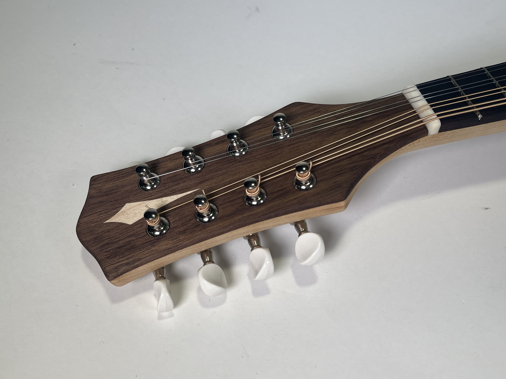
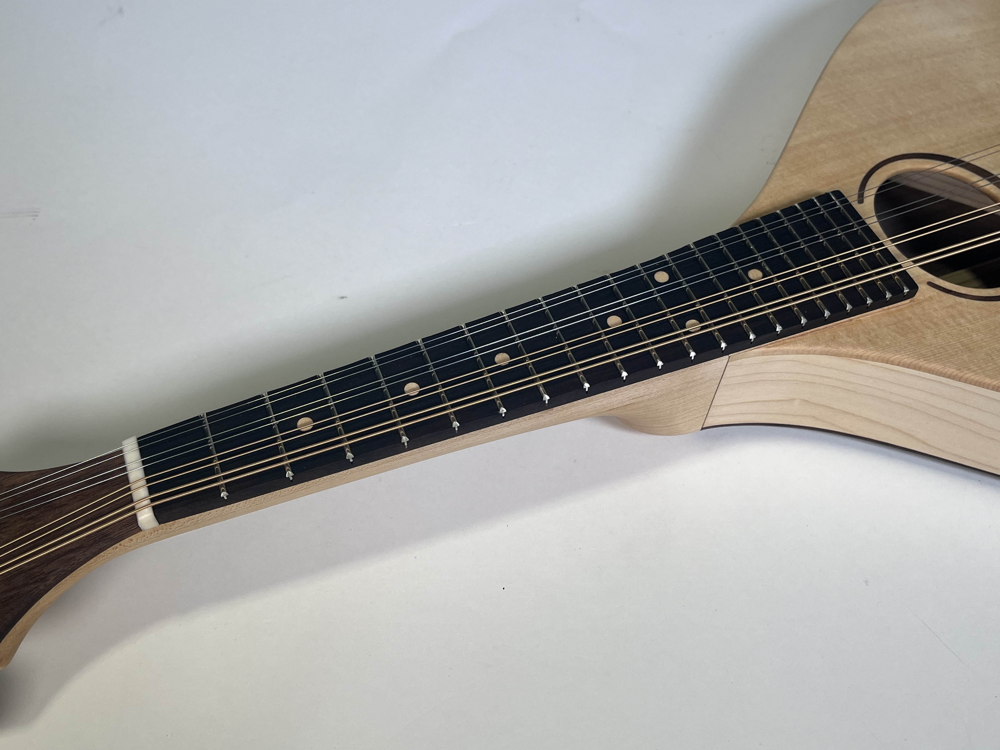
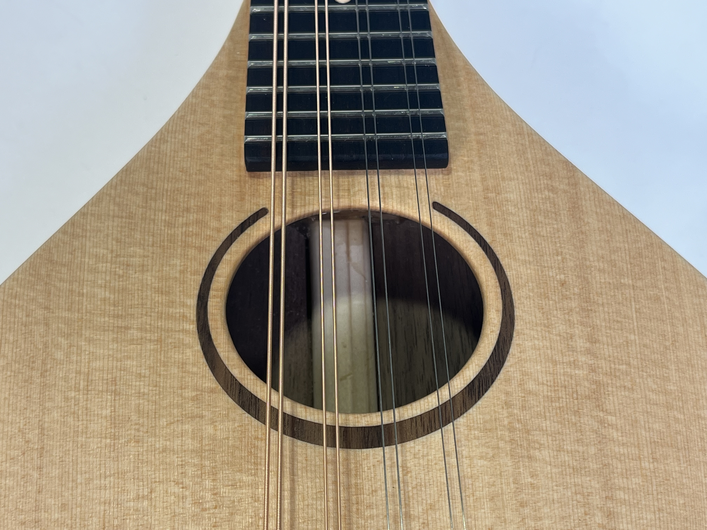
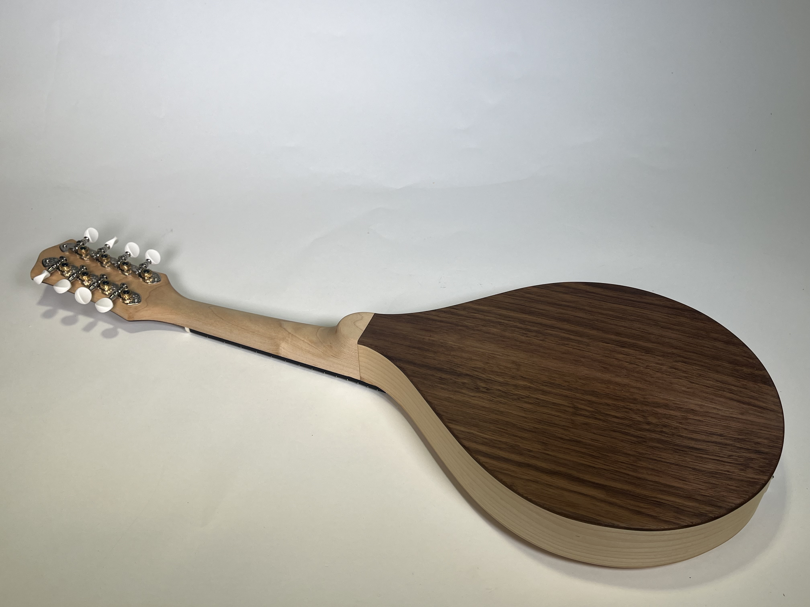
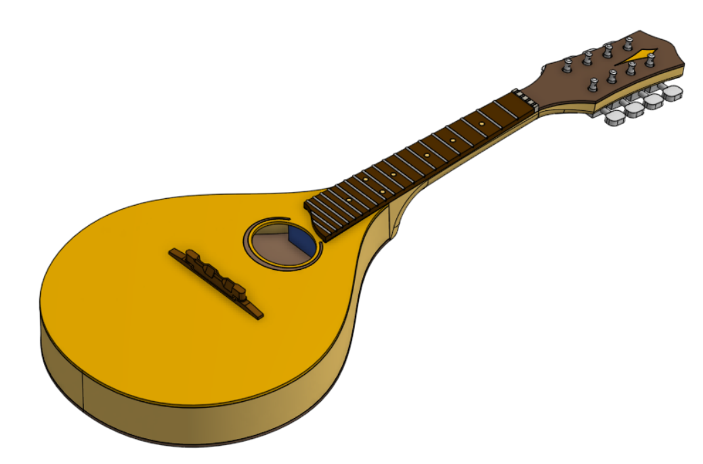

Mandolin
August 2024
This mandolin was built as part of a course at Tufts titled Musical Instrument Design and Manufacture, taught by Chris Rogers. Through the course we learned how to build, analyze, and better understand musical instruments using analytical, experimental, and numerical methods.
Finished Mandolin







Design
I made the decision to attempt a complex flat-top mandolin, featuring a spruce soundboard with walnut inlay, solid bent maple sides, an induced arch on the top and back with interior bracing, a hand carved maple neck, and more inlay work on the head plate and fretboard. I designed the mandolin from scratch, while referencing an old broken mandolin and online forums for rough measurements.
The full CAD was done in OnShape and can be viewed here.

CAD design
Construction
This was an immense, self-taught learning experience. I’ve broken the build down into 9 major steps. Click on each one to learn more.

2) Making Veneers

3) Bending the Sides

4) Body Structure

5) Top Inlay and Bracing

6) Body Glue-up

7) Neck Joint

8) Neck and Fretboard

9) Finishing Touches
Analysis
In an effort to understand our instruments more deeply, I did two projects to analyze its acoustic properties.
Composition
The final piece of this project was to compose and perform an original song! Since a mandolin is tuned like a violin, it is common to play fiddle tunes. I composed my song with a similar structure and sound to a lot of fiddle tunes. It has an AABB structure, and I tried to use repeating themes with some variation to create a cohesive composition. A performance is recorded in the overview video above.